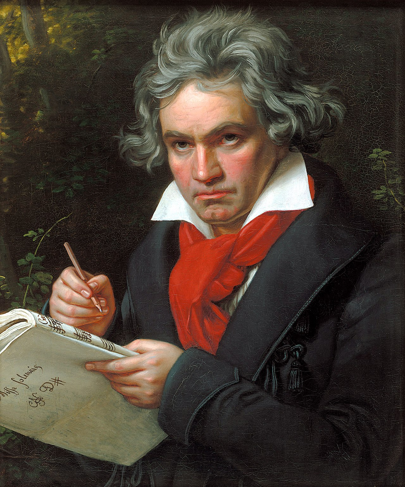

Ludwig van Beethoven
About
A German composer and pianist. A crucial figure in the transition between the classical and
romantic eras in classical
music, he remains one of the most recognized and influential musicians of this period, and is considered to
be one of
the greatest composers of all time
